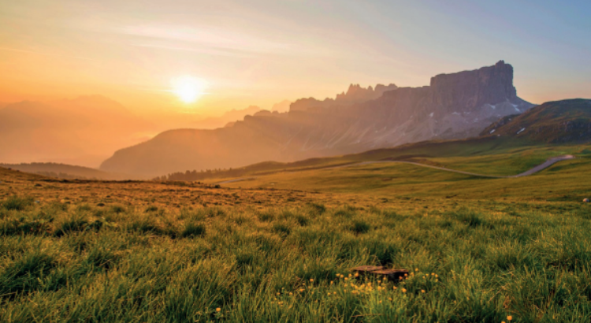
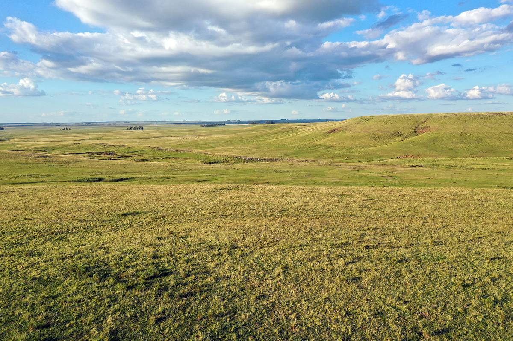
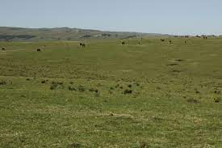
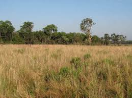
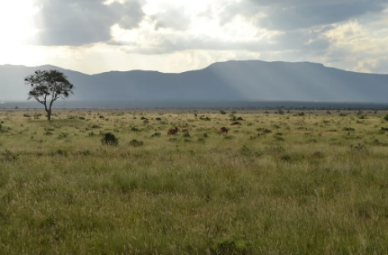
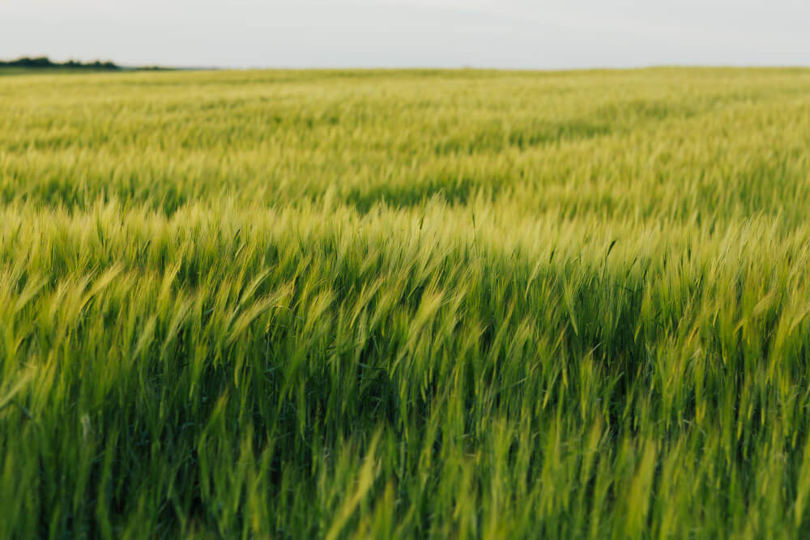

Pastizal o zacatalEstá formado principalmente por gramíneas o pastos. Los arbustos y árboles son muy
escasos y dispersos, se concentran en las márgenes de los ríos y arroyos. Se desarrollan en
suelos medianamente profundos de mesetas, fondos de valles y laderas poco inclinadas
entre 1100 y 1500 msnm, aunque en Sonora pueden descender hasta los 450 msnm.
La temperatura media anual es de 12 a 20 °C, con un clima seco estepario o desértico. Su
precipitación media anual es de 300 a 600 mm, con seis a nueve meses de sequías.



Para algunos autores la sabana y la pradera son consideradas variantes de este bioma, el cual
tiene además importancia económica ya que de él se alimenta al ganado bovino y equino.
Sin embargo, el aprovechamiento de los pastizales no es el óptimo, debido al sobrepastoreo,
que no permite el máximo rendimiento.
Algunas especies de flora de este bioma son del grupo de las cactáceas, como la yuca, el
agave y el mezquite, entre otras, y varias especies de gramíneas.



La fauna está formada por termitas, chapulines, escarabajos, mariposas, abejas y abejorros;
aves como el águila real, halcón de la pradera, chorlito llanero; mamíferos como puerco
espín, tejón, zorra norteña, algunos roedores excavadores como los perritos de las praderas,
pequeños grupos de berrendos y una única y muy pequeña manada de bisontes.
Angel Esteban Tabardillo BrionesDayann Gerardo Cordova ArmendarizJuan Pablo Ortiz GonzalesIvan Alberto Rodriguez HernandezJose Rigoberto Martinez Peraza